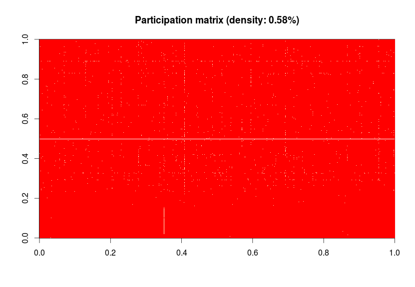
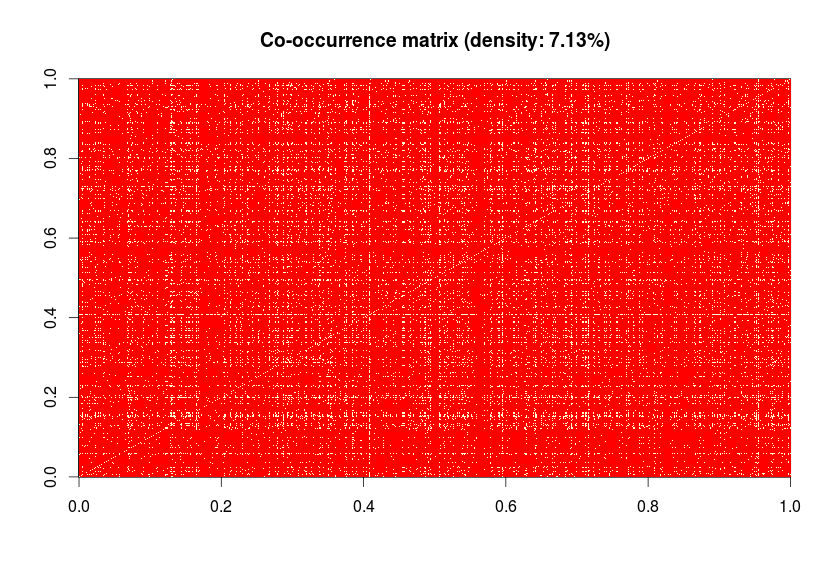

Alberto Lumbreras [PhD Student in Computer Science]
Analyzing one month of discussion in Podemos reddit
Posted on January 14, 2015In this post, I will play with the social network in the Podemos forum on Reddit. I will explore two questions:
- How dense is the participation matrix
user\(\times\)threads? - How many other users does an average user know.
- Social network and community detection.
Forum description
The Podemos forum in Reddit was first used as a tool of internal democracy. Today, its members use it also to share and discuss about political news.
I obtained the data from a dataset that was created and shared by a Reddit user some months ago. I parsed the json files corresponding to all Reddit posts of January 2015 and save it to a MySQL database (see the script). Unfortunatelly the dataset does not contain root posts (the ones that started the thread) and therefore we don’t have access to the title neither the user who posted it.
The podemos forum (a.k.a subreddit) contains 995 discussion threads that started on January. These threads contain a total of 12912 posts written by 1218 users.
Participation matrix
Let us built a matrix where rows represent users and columns represent threads, and where every position \((u,t)\) in the matrix indicates whether the user \(u\) participated in the thread \(t\).

The matrix is very sparse (only 0.58% of the positions are filled). The white horizontal line corresponds to the articifical ̀root user (since we don’t know the user who posted the root post, we considered all of them are written by the same ̀root user). We see also another very active user in the upper part of the matrix. Around 0.4 there is also a quite white vertical line that represents a thread where a lot of users participated (maybe one of the threads where Podemos members voted something; the dataset does not give as a url to the original thread so that we can check it). A smaller vertical line on the bottom part indicates a group of users that participated only on that thread.
Question: what if we get the matrix corresponding to the first \(N\) posts of every thread and then remove everyone but the most active users (consider that they are decorative and have no effect on the dynamic)? Could we predict the final length (or whether the thread will be short, medium, or long size)? We could use a linear regression, some non-linear predictor to see what happens.
Co-participation matrix
Now do the same with the co-participation matrix. A co-participation matrix is a square matrix that says whether user \(u\) has participated (at least once) in the same thread than user \(v\).

This matrix is less sparse (7.13%). We might do a couple of things with this matrix. We could perform blockmodeling to detect groups of people that tend to participate with the same other groups or we could transform it to a social graph, detect communities and see what it looks like.
Social graph of co-participations
I built a graph where an edge between \(u\) and \(v\) means that user \(u\) co-participated in a thread with \(v\). Then I applied a community detection algorithm and colored the nodes according to their community.

There algorithm told us there are four communities of 678, 189, 348 and 3 members and that the overall modularity is 0.27 (a random graph would have modularity 0). An analysis of connected components told us there is only one big component, that is, there are no isolated communities.